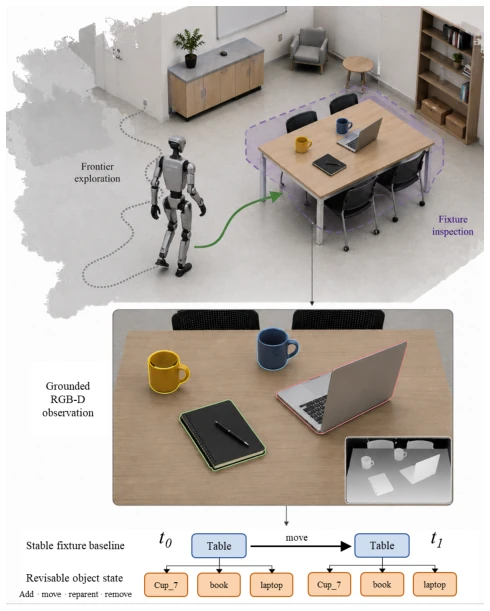
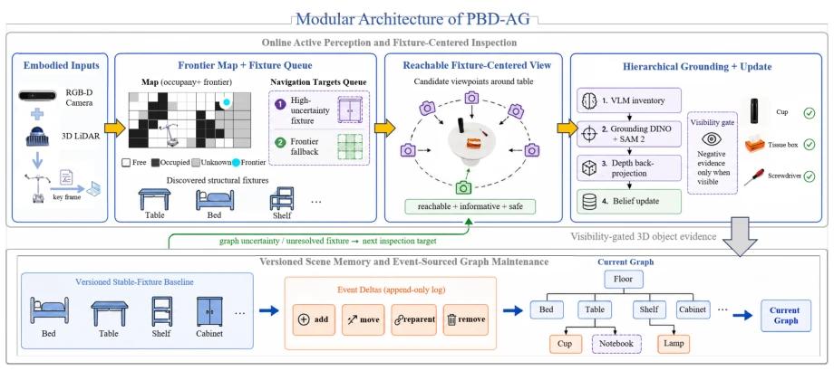
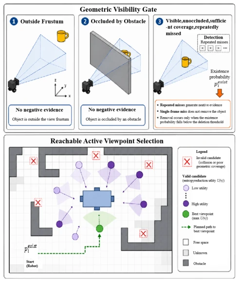
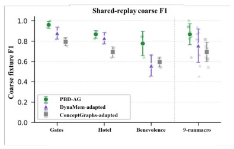
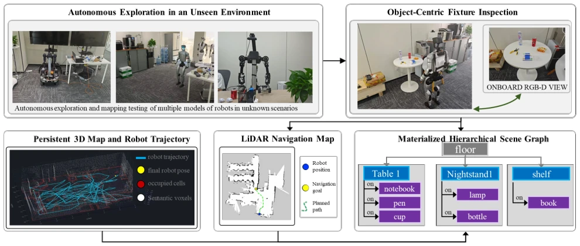
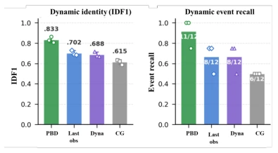

This system behaves like an obsessive-compulsive patient, locking furniture into a baseline, only allowing things to move. The advantage is freezing stable elements, recording dynamic changes as delta, avoiding recalculation each time. Especially the 'geometric visibility gating', preventing the robot from assuming objects are gone when unseen, quite practical. But the disadvantages are also obvious, relying on a preset fixture classification system; if the robot encounters unseen furniture types, the bootstrap phase may stall. Moreover, although the active detection strategy balances cost, it may still not be robust enough under complex occlusion. Overall, it is a solid engineering improvement, but still far from a universal world model.
研究动机Motivation
长周期服务机器人需要能随时间修正的世界模型。现有方法要么像静态地图无法反映变化，要么像 DynaMem (Liu et al. 2024) 这种在线动态内存缺乏持久身份维持，容易把遮挡误判为移除。ConceptGraphs (Gu et al. 2024) 等开放词汇地图主要评估静态重建，缺乏对物体存在性的几何证据验证。当下游规划依赖跨会话的物体身份和支持关系时，这些失败模式很致命。PBD-AG 试图解决如何区分真实世界变化与不可靠观测的问题，特别是处理重复漏检时的身份碎片化。
Long-term service robots require world models capable of correction over time. Existing methods either resemble static maps unable to reflect changes, or like DynaMem (Liu et al. 2024) such online dynamic memory lacks persistent identity maintenance, easily misjudging occlusion as removal. Open-vocabulary maps such as ConceptGraphs (Gu et al. 2024) mainly evaluate static reconstruction, lacking geometric evidence verification for object existence. When downstream planning relies on cross-session object identity and support relations, these failure modes are fatal. PBD-AG attempts to solve the problem of how to distinguish real world changes from unreliable observations, especially handling identity fragmentation during repeated missed detections.
The overall process is divided into three stages: autonomous-guided baseline construction, evidence-gated persistent update, and graph-uncertainty-guided active detection. First, the robot constructs an occupancy map through frontier exploration, clustering to generate fixture hypotheses, frozen as an immutable baseline after multi-frame verification. Dynamic objects are attached to fixtures as event delta. During updates, geometric visibility gating is introduced; only when an object is within the frustum and unoccluded does a missed detection reduce existence belief, avoiding false deletion. The active detection module calculates fixture uncertainty (existence, category, position, etc.), scheduling the robot to visit unresolved fixtures for close-range RGB-D scanning, balancing coverage, cost, and risk. Fine-grained objects are located via VLM and Grounding DINO, segmented by SAM 2, and bound to the parent fixture.

Figure 1: The robot first discovers stable fixtures through exploration and later maintains fine-grained object changes through event-based graph updates.

Figure 2: Architecture of PBD-AG. The robot maps unexplored space, confirms coarse fixture tracks, and schedules task-eligible unresolved fixtures for reachable close-view inspection. Confirmed fixtures populate the working structural memory, which is frozen as an immutable baseline package; subsequent lifecycle changes update persistent tracks while typed events append an ordered audit trail.

Figure 3: Visibility gating and graph-guided inspection. Top: only geometrically observable misses reduce existence be- lief. Bottom: graph uncertainty selects an unresolved fixture, after which feasible views are ranked by coverage, standoff, travel, and obstacle clearance.
Conducted 9 autonomous rollouts in OmniGibson/BEHAVIOR Gates, Hotel, Benevolence scenes. Comparison baselines include DynaMem-adapted and ConceptGraphs-adapted. Metrics cover coarse-grained F1, fine-grained F1, IDF1, and event recall rate. PBD-AG achieves the highest coarse-grained F1 (0.868) under shared evidence, outperforming DynaMem by 11.1 points. In dynamic evaluation, IDF1 reaches 0.833, with no identity switching, event recall 11/12. Ablation experiments show that removing visibility gating leads to a surge in false negatives, while removing persistent ID causes a plummet in IDF1. Physical robot demonstration validates end-to-end integration.

Figure 4: Autonomous fixture recovery across environments. Scene-wise coarse-fixture F1 under shared evidence; PBD- AG attains the highest mean F1 in all three environments.

Figure 5: Qualitative physical-robot deployment. (A) Autonomous exploration; (B) object-centric RGB-D inspection; (C) persistent 3D mapping with robot trajectory and inspection goals; (D) LiDAR occupancy mapping; and (E) the materialized hierarchical scene graph.

Figure 6: Dynamic identity and event recall. IDF1 and pooled event recall on the shared 3D observation streams.